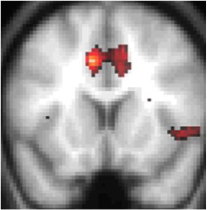
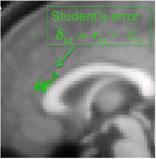

Effort, Reward and Motivation
In 2015 I was awarded a 3 year BBSRC AFL Fellowship to examine the neural basis of apathy in young and elderly adults. The aim of this project is to understand more about the behavioral and neural mechanisms that underpin effort-based decision-making and trait levels of motivation (i.e. Apathy) using a combination of behavioral tasks, computational modelling, fMRI and TMS.
Key Publications: Apps, M.A., Ramnani, N. (2014) The Anterior Cingulate Gyrus Signals the Net Value of Others' Rewards. Journal of Neuroscience. 04/2014; 34(18):6190-6200.
Collaborators: Prof. Masud Husain; Prof. Matthew Rushworth



Learning, Decision-making and Social Cognition
How does our brain make decisions? And how does it understand the decisions of other people? Much of my research has focused on understanding how the brain processes other people’s learning and decision-making. This work has largely focused on testing whether the Anterior Cingulate Cortex (ACC) processes information in the manner predicted by reinforcement learning theory in both healthy adults and those with autism spectrum disorders.
Key Publications:
Apps MAJ, Lesage E, Ramnani N (2015) Vicarious Reinforcement Learning Signals When Instructing Others. Journal of Neuroscience , 35:2904–2913.
Apps MA, Lockwood PL, Balsters JH (2013) The role of the midcingulate cortex in monitoring others’ decisions. Front Neurosci , 7.
Collaborators: Prof. Narender Ramnani; Prof. Essi Viding; Dr. Josh Balsters; Patricia Lockwood
Predictive coding and face processing
How does our brain model our internal states and the outside world? Recently I have begun using models of predictive coding to understand more about how predictions about the environment shape the inferences we make about the world and also our decision-making. In particular I have explored how this framework might tell us something important about how we process our own, and other people’s faces.
Key Publications:
Apps MAJ, Tsakiris M (2013) Predictive codes of familiarity and context during the perceptual learning of facial identities. Nature Communications 4.
Apps MAJ, Tsakiris M (2014) The free-energy self: a predictive coding account of self-recognition. Neuroscience and Biobehavioral Reviews.
Collaborators: Prof. Manos Tsakiris, Dr. Vivien Ainley